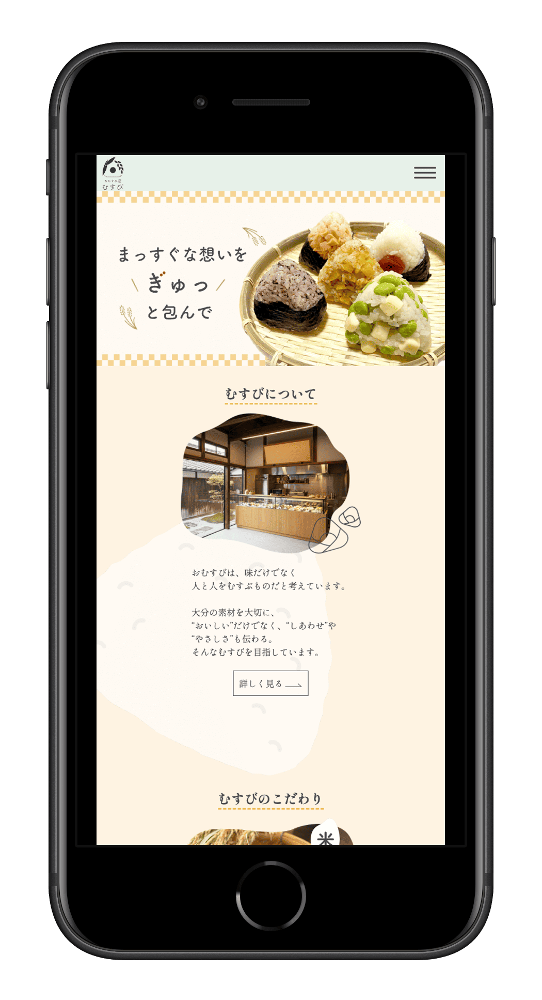
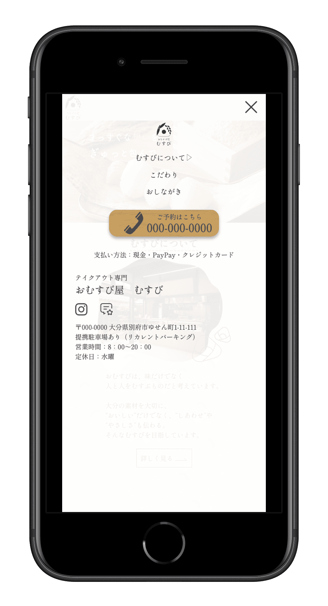
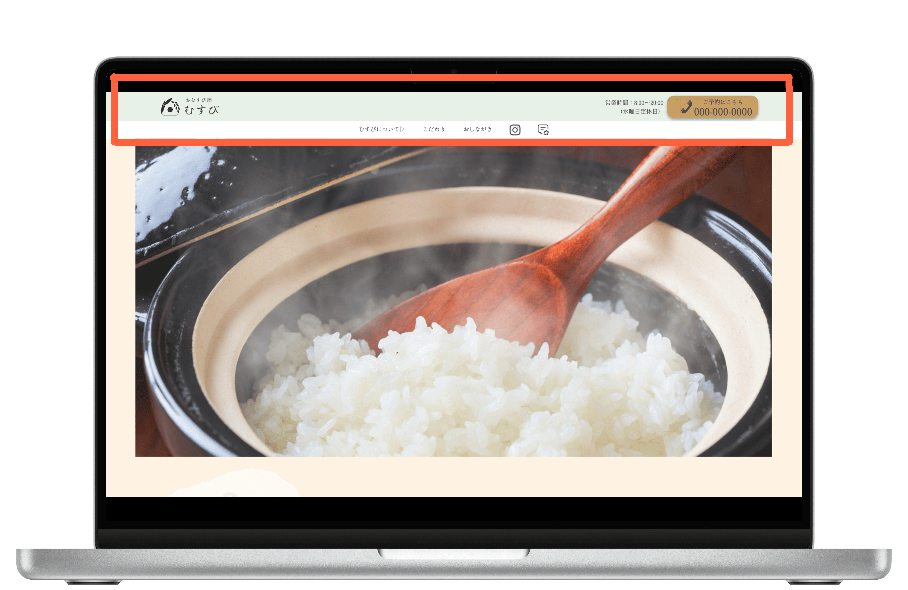
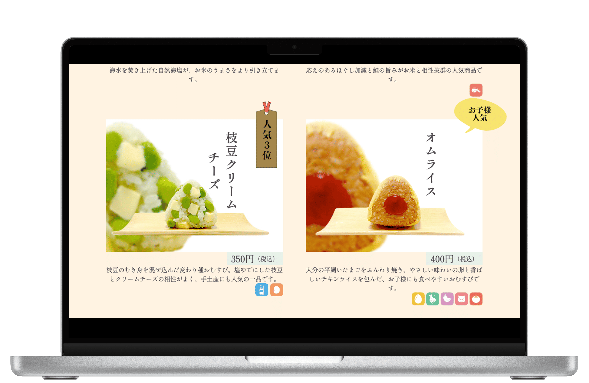
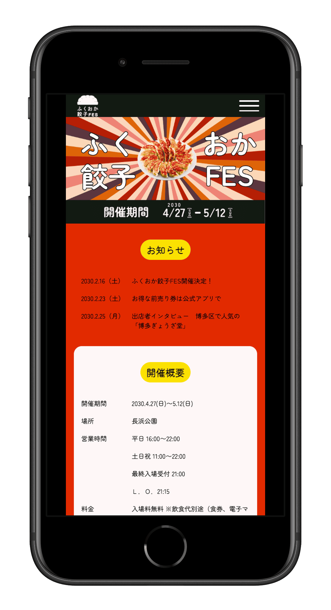
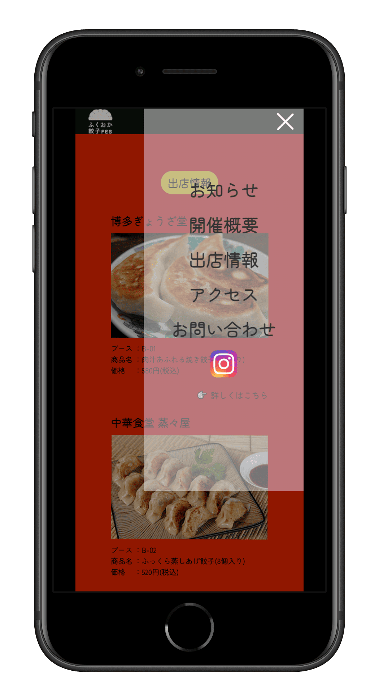
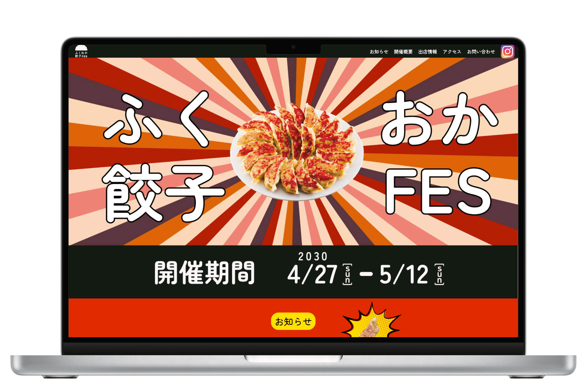

訓練校課題のグループワークにて、クライアント依頼の「おむすび屋むすび」のWebサイトを制作しました。
Webサイト

制作期間：1カ月（約100時間）
メンバー：7名（途中より5名）
作品タイトル：おむすび屋むすびWebサイト
担当した制作：画像加工／コーディング（レスポンシブ対応）／CANVAスライド／POWER POINTスライド／トークスクリプト
ターゲット：20代～30代の男女
制作目的：むすびの歴史や店主の想いを知ってむすびのファンになる顧客の獲得
課題：20〜30代への認知が弱い／お店の想いや背景が伝わっていない／店舗の場所が分かりづらい
コンセプト：「ひとと想いを、おむすびでむすぶ」
デザイン方針：温かみ／親しみやすさ／自然に
おむすび屋むすびの温かさや親しみやすさが伝わるよう、色・写真・余白のバランスを大切にしたデザインを意識しました。
ナチュラルでやさしい色合いをベースに、主張しすぎない配色とし、写真が引き立つ構成にしています。
情報設計：
写真を軸に直感的な興味を喚起し、「行ってみたい」と感じてもらうことを意識した情報設計を行いました。
検索やGoogleマップから来店につながる導線を意識し、Googleビジネスプロフィールとの連携を行いました。
WebサイトとGoogleビジネスプロフィールを併用することで、「知る → 興味を持つ → 行ってみる → SNS共有」という流れを一貫して設計しています。
来店動線：Googleマップ埋め込み／住所記載／SNS連携
制作で学んだこと・成果：
本制作を通して、デザインは見た目を整えることではなく、「想いをどう伝え、行動につなげるか」を考えることが重要だと学びました。
クライアントの背景や想いを丁寧に整理し、それを写真・言葉・構成に落とし込むことで、初めて意味のあるデザインになることを実感しました。
また、グループワークを通して、役割分担や進行管理、意見のすり合わせの大切さを学びました。
限られた制作期間の中で、デザイン・コーディング・資料作成・プレゼン準備を並行して進めることで、実務を意識した制作フローを経験することができました。
さらに、Webサイト単体で完結させるのではなく、Googleビジネスプロフィールや検索導線まで含めて考えることで、「作って終わりではないWeb制作」の視点を身につけることができました。

モバイルTopページ ハンバーガーメニュー展開前

モバイルTopページ ハンバーガーメニュー展開後
コーディング担当部分：モバイル版Topページ全体とハンバーガーメニュー
制作時間：12時間（内ハンバーガーメニュー2時間）
工夫した点：デザインチームの細かい要望に応えたうえでアイデアを提案すること
アイデア：スクロール時のハンバーガーボタンの追従と、ハンバーガーメニュー展開後の背景の透過

PC Topページ
コーディング担当部分：PC版Topページ全体とナビゲーション
制作時間：6時間（内ナビゲーション2時間）
工夫した点：スクロール時のナビゲーション上部固定表示と、ヘッダー幅を微調整して見やすい画面展開を追求

PC 下層ページ
コーディング担当部分：モバイル版PC版下層ページ全体・おむすび画像加工（Photoshop）
制作時間：16時間（内画像加工2時間）
工夫した点：画像加工の際、素材の色味を調整し全体の統一感を高める

訓練校課題のグループワークにて、「餃子フェス」のWebサイトを制作しました。
制作期間：28時間
メンバー：3名
作品タイトル：餃子フェス特設Webサイト
概要：訓練校のグループ
ワーク課題として、架空イベント「餃子フェス」の公式Webサイトを3人チームで制作しました。
イベントの魅力が直感的に伝わり、「見て楽しい・探しやすい・行ってみたくなる」ことを目的に、デザインからコーディングまで一貫して取り組みました。
担当した制作：
トップページのコーディング
レイアウト調整・レスポンシブ対応
カンプ制作（Figma）
デザイン再現（カンプをもとに実装）
ビジュアル調整・画像配置
制作背景・目的：
開催情報が一目で分かること
出店店舗・メニューが探しやすいこと
SNS映え・ワクワク感が伝わること
デザインの工夫：
フェスの高揚感が伝わるよう、赤・オレンジ・黄色を基調としたグラデーション配色を採用
放射線やアイコンを用いて、お祭り感・賑やかさを演出
写真を大きく配置し、餃子の「美味しさ」が直感的に伝わる構成に
情報設計：
「開催期間」「開催概要」「出店情報」「アクセス」「お問い合わせ」を迷わず探せるよう、縦スクロールで整理
出店情報ページでは、写真＋簡潔な説明を繰り返すことで視認性を向上
スマートフォン閲覧を想定し、縦長でも見やすいUI設計を意識
使用ツール・技術：
HTML／CSS／JavaScript
デザインカンプ（Figma／Illustrator／Photoshop）
制作で学んだこと・成果：
グループ制作を通して、役割分担と情報共有の大切さを学び、チームで成果物を完成させる経験を積みました。
デザインカンプを正確に読み取り、見やすさを意識したコーディングに取り組んだことで、情報量の多いページでも整理されたレイアウトを実装できました。
また、イベントサイトとして必要な情報や導線を考え、ユーザーが迷わず行動できる構成を意識する視点が身につきました。

モバイルTopページ ハンバーガーメニュー展開前

モバイルTopページ ハンバーガーメニュー展開後
コーディング担当部分：モバイル版Topページ全体とハンバーガーメニュー
制作時間：18時間（内ハンバーガーメニュー2時間）
工夫した点：スクロール時のハンバーガーボタンの追従と、ハンバーガーメニュー展開後の背景の透過

PC Topページ
コーディング担当部分：PC版Topページ全体とナビゲーション
制作時間：8時間（内ナビゲーション2時間）